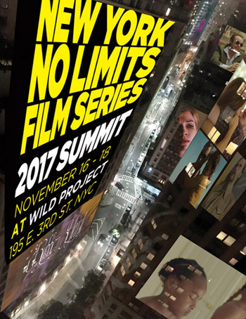

| 
New York No Limits Film Series 2017 SUMMIT
Presented by Wild Project
November 16-18
18 films have been selected, including; 4 feature films & 19 short films. From critically acclaimed filmmakers to emerging newcomers, each has their own unique voice. The 2017 Summit is the 7th presentation of New York No Limits year end film programming event. Each film selected embodies truly independent cinema that reflects the joys and enigmas of the human experience.
A BAD IDEA GONE WRONG Directed & written by Jason Headley, starring Matt Jones, Will Rogers & Eleanore Pienta - USA comedy/narrative Two would-be thieves forge a surprising relationship with with an unexpected housesitter when they accidentally trap themselves in a house they just broke into. “Consistently Funny” -Variety
New York City Premiere (Official Jury Recognition SXSW, deadCenter Film Festival)
AFTER PARTY directed by Amos Posner, written by Jesse Knight USA comedy/narrative, A up-and-coming photographer begrudgingly attends the party of a pretentious gallery owner in the hopes of meeting a respected art dealer. Starring: Rachel Nichols, Laura Dreyfuss, Sean Kleier& Steve Guttenberg (Official Selection Chelsea Film Festival, Orlando Film Festival) www.afterparty-movie.com
AND THEN THERE WAS EVE directed by Savannah Bloch, written by Colette Freedman & Savannah Bloch, Psychological drama USA, starring Tania Nolan & Rachel Cowl - “Game changer....Nolan is uttlerly amazing” - Film-book.com New York City Premiere (Official Selection Los Angeles Film Festival, Women Texas Film Festival) http://www.evethemovie.com/
SUNDOWN directed & written by Brendan Boogie, Comedy/drama USA, starring Grayson Powell, Zele Avradopoulos & Paul E. Kandarian SUNDOWN is an independent feature film about a family dealing with the ravages and absurdities of dementia. (Official Selections Long Island Film Festival, Massachusetts International Film Festival) New York City Premiere http://brendanboogie.com/
Short films highlights include:
ARKABUTLA written & directed by Katori Hall; Internationally acclaimed MARE NOSTRUM directed by Rana Kazkaz & Anas Khalaf; THEY CHARGE FOR SUN directed by Terence Nance, written by Eugene Ramos; AMERICAN PARADISE, directed & written by Joe Talbot.
11.16.17 Thursday
7:00 PM, Feature presentation
SUNDOWN, Brendan Boogie director US
9:00 PM Short film presentation
A WHOLE WORLD FOR A LITTLE WORLD, Fabrice Bracq director France
BEWARE, THE BEAST I WORSHIP, Adam Chitayat director US
KCLOC, Ninaad Kulkarni director US
NEW NEIGHBORS, E. G. Bailey director US
SURE-FIRE, Michael Goldburg director US
THANKSGIVING BREAK, Andy Carrigan director US
WAN-MEI (PERFECT), Yiyi Yin director US/China
11.17.17 Friday
7:00 PM, Feature/Short film presentation
AFTER PARTY, Amos Posner director USA
CITY GIRL, Avery Regen director USA
EARWORM, Tara Price director USA
RUBBER HEART, Lizzy Sanford director USA
9:15 PM, Feature/Short film presentation
AND THEN THERE WAS EVE, Savannah Bloch director USA
INNARDS, Tyler Rubenfeld director USA
11.18.17 Saturday
6:30 PM, Short film presentation
ARKABUTLA, Katori Hall director US
HEAD WOUND, Patrick Valenti US
LIKE THE DINOSAURS, Emilie Rosas Canada
MARE NOSTRUM, Rana Kazkaz, Anas Khalaf directors France/Syria
NIGHT SHIFT, Marshall Tyler director US
THAT THE BODY IS FOR RECEIVING HAPPINESS AND GOOD STUFF, Anna Blum director US
THEY CHARGE FOR THE SUN, Terence Nance director US
9:00 PM, Feature/Short film presentation
A BAD IDEA GONE WRONG, Jason Headley director US
AMERICAN PARADISE, Joe Talbot director US
A Q & A will be conducted with the filmmakers in attendance after each screening block. The Wild Project is a wheelchair accessible space. The lobby and box office is open 30 minutes prior to each screening block. For questions please contact info@newyorknolimits.com.
Please join us for an opening and closing night party at Grape and Grain.
New York No Limits Film Series (NYNL), launched in November 2010, is an ongoing collection of screenings that presents the best films from around the world in the most unique and dynamic arts city in the world. NYNL provides filmmakers the opportunity and support to explore innovative, taboo and diverse subjects. The goal of NYNL is multi layered and broad; to create a film program of the most genre diverse, multi cultural and visionary independent films from around the world.
|